Zabbix サーバーをデプロイ¶
CentOS 8.3 + MySQL 8 + Zabbix 5.2 の組み合わせで Zabbix サーバーをデプロイします。
Note
このプレイを書くにあたり、下記のサイトおよび書籍を参考にしました。ありがとうございました。
インベントリ¶
---
all:
children:
zabbix_group:
hosts:
zabbix:
---
# host_vars/zabbix.yml
# ・ zabbix サーバーにコネクションするための情報
ansible_host: 192.168.23.39
ansible_user: ansible-user
ansible_ssh_private_key_file: ~/.ssh/id_ed25519
---
# group_vars/zabbix_group.yml
# ・ Zabbix サーバーのデプロイに使用する変数
# -------------------- MySQL --------------------
# root アカウントのパスワード
mysql_root_pass: "MS-05B@Zeonic"
# レポジトリの URL
mysql_repo_url : "https://dev.mysql.com/get/mysql80-community-release-el8-1.noarch.rpm"
# 必要なパッケージ
mysql_packages:
- mysql-community-server
- python3-PyMySQL
# サービス名
mysql_srv_name: "mysqld.service"
# -------------------- Zabbix --------------------
# Zabbix 用に MySql に作成するデータベース名
zabbix_db_name: "zabbix_db"
# Zabbix 用に MySql に作成するユーザー名とパスワード
zabbix_user: "zabbixuser"
zabbix_pass: "MSM-07@Mip"
# レポジトリの URL
zabbix_repo_url : "https://repo.zabbix.com/zabbix/5.2/rhel/8/x86_64/zabbix-release-5.2-1.el8.noarch.rpm"
# 必要なパッケージ
zabbix_packages:
- httpd
- php
- zabbix-server-mysql
- zabbix-web-japanese
- zabbix-apache-conf
- zabbix-agent2
# ファイアウォールに穴を開けるポート
zabbix_ports:
- 10051/tcp # Zabbix agent
- 80/tcp # Apache (http)
# サービス名
zabbix_services:
- httpd.service
- php-fpm.service
- zabbix-server.service
- zabbix-agent2.service
プレイ¶
---
# deploy_zabbix.yml
# ・ Zabbix サーバーをデプロイする
# ・ CentOS8.3 + Zabbix5.2 + MySql8
- name: Zabbix 5.2 サーバーをデプロイする
hosts: zabbix_group
become: yes
gather_facts: no
tasks:
- name: 初期処理
ansible.builtin.import_role:
name: initial_processing
- name: Zabbix のインストールと設定
ansible.builtin.import_role:
name: installing_and_configuring_zabbix
- name: MySQL のインストールと設定
ansible.builtin.import_role:
name: installing_and_configuring_mysql
- name: ファイアウォールの設定とサービスを起動
ansible.builtin.import_role:
name: configure_firewall_and_start_service
---
# roles/initial_processing/tasks/main.yml
# ・初期処理
# ・SE Linux の無効化
# ・インストール済みのすべてのパッケージを最新状態に更新
- name: SE Linux を無効化
ansible.posix.selinux:
state: disabled
notify: reboot_system
- name: インストール済みパッケージを更新
ansible.builtin.dnf:
name: '*'
state: latest
notify: reboot_system
- name: ハンドラーを実行（再起動）
ansible.builtin.meta: flush_handlers
---
# roles/initial_processing/handlers/main.yml
# ・初期処理のハンドラー
# ・サーバーを再起動
- name: 再起動
ansible.builtin.reboot:
listen: reboot_system
---
# roles/installing_and_configuring_zabbix/tasks/main.yml
# ・Zabbix と関連パッケージをインストールし設定する
- name: Zabbix 5.2 のリポジトリをインストール
ansible.builtin.dnf:
name: "{{ zabbix_repo_url }}"
disable_gpg_check: yes
state: present
- name: Zabbix 5.2 のパッケージをインストール
ansible.builtin.dnf:
name: "{{ zabbix_packages }}"
state: present
- name: 設定ファイルを変更 (PHP)
ansible.builtin.lineinfile:
path: '/etc/php-fpm.d/zabbix.conf'
regexp: 'date.timezone'
line: 'php_value[date.timezone] = Asia/Tokyo'
backup: yes
state: present
- name: 設定ファイルを変更 (Zabbix Server / Database user)
ansible.builtin.lineinfile:
path: '/etc/zabbix/zabbix_server.conf'
regexp: '^DBUser='
line: 'DBUser={{ zabbix_user }}'
backup: yes
state: present
- name: 設定ファイルを変更 (Zabbix Server / Database password)
ansible.builtin.lineinfile:
path: '/etc/zabbix/zabbix_server.conf'
regexp: 'DBPassword='
line: 'DBPassword={{ zabbix_pass }}'
backup: yes
state: present
- name: 設定ファイルを変更 (Zabbix Server / Database name)
ansible.builtin.lineinfile:
path: '/etc/zabbix/zabbix_server.conf'
regexp: '^DBName='
line: 'DBName={{ zabbix_db_name }}'
backup: yes
state: present
- name: 設定ファイルを変更 (Zabbix Agent 2)
ansible.builtin.lineinfile:
path: '/etc/zabbix/zabbix_agent2.conf'
regexp: '^Hostname='
line: 'Hostname=zabbix'
backup: yes
state: present
次のプレイの一部タスクは冪等性が保たれていません。
---
# roles/installing_and_configuring_mysql/tasks/main.yml
# ・MySQL をインストールし Zabbix 用に設定する
- name: MySQL のリポジトリをインストール
ansible.builtin.dnf:
name: "{{ mysql_repo_url }}"
disable_gpg_check: yes
state: present
- name: デフォルトの MySQL を無効化
ansible.builtin.command:
cmd: 'dnf module disable -y mysql'
- name: MySQL をインストール
ansible.builtin.dnf:
name: "{{ mysql_packages }}"
state: present
- name: mysql_native_password の有効化
ansible.builtin.lineinfile:
path: '/etc/my.cnf'
regexp: 'default-authentication-plugin='
line: 'default-authentication-plugin=mysql_native_password'
backup: yes
state: present
- name: MySQL サービスを起動（自動起動あり）
ansible.builtin.systemd:
name: "{{ mysql_srv_name }}"
enabled: yes
state: started
- name: MySQL の初期パスワードを抽出
ansible.builtin.shell:
cmd: "grep 'A temporary password is generated for root@localhost' /var/log/mysqld.log | awk -F ' ' '{print $(NF)}'"
changed_when: no
register: mysql_result
- name: MySQL の root アカウントのパスワードを再設定
ansible.builtin.command:
cmd: mysql --user=root --password={{ mysql_result['stdout'] }} --connect-expired-password --execute="ALTER USER 'root'@'localhost' IDENTIFIED BY '{{ mysql_root_pass }}'; flush privileges;"
- name: MySQL にユーザーアカウント zabbix を作成
community.mysql.mysql_user:
login_user: "root"
login_password: "{{ mysql_root_pass }}"
name: "{{ zabbix_user }}"
password: "{{ zabbix_pass }}"
priv: '{{ zabbix_db_name }}.*:ALL,GRANT'
state: present
host: '%'
- name: データベースを作成
community.mysql.mysql_db:
login_user: "root"
login_password: "{{ mysql_root_pass }}"
name: "{{ zabbix_db_name }}"
state: present
encoding: utf8
collation: utf8_bin
- name: Zabbix 用スキーマを作成
ansible.builtin.shell:
cmd: zcat /usr/share/doc/zabbix-server-mysql/create.sql.gz | mysql --user=root --password={{ mysql_root_pass }} {{ zabbix_db_name }}
---
# roles/configure_firewall_and_start_service/tasks/main.yml
# ・ファイアウォールに穴を開ける
# ・サービスを起動する ＆ 再起動時にサービスを自動起動する
- name: ファイアウォールに穴あけ
ansible.posix.firewalld:
port: "{{ item }}"
permanent: yes
zone: public
immediate: yes
state: enabled
loop: "{{ zabbix_ports }}"
- name: サービスを起動（自動起動あり）
ansible.builtin.systemd:
name: "{{ item }}"
enabled: yes
state: started
loop: "{{ zabbix_services }}"
実行ログ¶
piyo@vmpc:~/example/sample/zabbix$ ansible-playbook -i hosts.yml deploy_zabbix.yml
PLAY [Zabbix 5.2 サーバーをデプロイする] ****************************************************************************************************
***********
TASK [initial_processing : SE Linux を無効化] ***********************************************************************************************
****
[WARNING]: SELinux state temporarily changed from 'enforcing' to 'permissive'. State change will take effect next reboot.
changed: [zabbix]
TASK [initial_processing : インストール済みパッケージを更新] ********************************************************************************
****************
changed: [zabbix]
RUNNING HANDLER [initial_processing : 再起動] ***********************************************************************************************
***
changed: [zabbix]
TASK [installing_and_configuring_zabbix : Zabbix 5.2 のリポジトリをインストール] ************************************************************
*************
changed: [zabbix]
TASK [installing_and_configuring_zabbix : Zabbix 5.2 のパッケージをインストール] ************************************************************
*************
changed: [zabbix]
TASK [installing_and_configuring_zabbix : 設定ファイルを変更 (PHP)] *************************************************************************
*********
changed: [zabbix]
TASK [installing_and_configuring_zabbix : 設定ファイルを変更 (Zabbix Server / Database user)] ***********************************************
*********
changed: [zabbix]
TASK [installing_and_configuring_zabbix : 設定ファイルを変更 (Zabbix Server / Database password)] *******************************************
*********
changed: [zabbix]
TASK [installing_and_configuring_zabbix : 設定ファイルを変更 (Zabbix Server / Database name)] ***********************************************
*********
changed: [zabbix]
TASK [installing_and_configuring_zabbix : 設定ファイルを変更 (Zabbix Agent 2)] **************************************************************
*********
changed: [zabbix]
TASK [installing_and_configuring_mysql : MySQL のリポジトリをインストール] ******************************************************************
*************
changed: [zabbix]
TASK [installing_and_configuring_mysql : デフォルトの MySQL を無効化] ***********************************************************************
**********
[WARNING]: Consider using the dnf module rather than running 'dnf'. If you need to use command because dnf is insufficient you can add
'warn: false' to this command task or set 'command_warnings=False' in ansible.cfg to get rid of this message.
changed: [zabbix]
TASK [installing_and_configuring_mysql : MySQL をインストール] ******************************************************************************
*******
changed: [zabbix]
TASK [installing_and_configuring_mysql : mysql_native_password の有効化] ********************************************************************
****
changed: [zabbix]
TASK [installing_and_configuring_mysql : MySQL サービスを起動（自動起動あり）] **************************************************************
***************
changed: [zabbix]
TASK [installing_and_configuring_mysql : MySQL の初期パスワードを抽出] **********************************************************************
***********
ok: [zabbix]
TASK [installing_and_configuring_mysql : MySQL の root アカウントのパスワードを再設定] ******************************************************
****************
changed: [zabbix]
TASK [installing_and_configuring_mysql : MySQL にユーザーアカウント zabbix を作成] **********************************************************
*************
changed: [zabbix]
TASK [installing_and_configuring_mysql : データベースを作成] ********************************************************************************
*********
changed: [zabbix]
TASK [installing_and_configuring_mysql : Zabbix 用スキーマを作成] ***************************************************************************
********
changed: [zabbix]
TASK [configure_firewall_and_start_service : ファイアウォールに穴あけ] **********************************************************************
************
changed: [zabbix] => (item=10051/tcp)
changed: [zabbix] => (item=80/tcp)
TASK [configure_firewall_and_start_service : サービスを起動（自動起動あり）] ****************************************************************
***************
changed: [zabbix] => (item=httpd.service)
changed: [zabbix] => (item=php-fpm.service)
changed: [zabbix] => (item=zabbix-server.service)
changed: [zabbix] => (item=zabbix-agent2.service)
PLAY RECAP **********************************************************************************************************************************
zabbix : ok=22 changed=21 unreachable=0 failed=0 skipped=0 rescued=0 ignored=0
piyo@vmpc:~/example/sample/zabbix$
Web インターフェースのインストール¶
ブラウザーで http://192.168.23.39/zabbix を開く
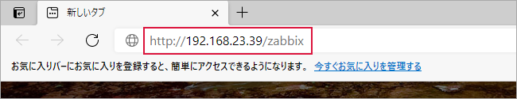Default language で
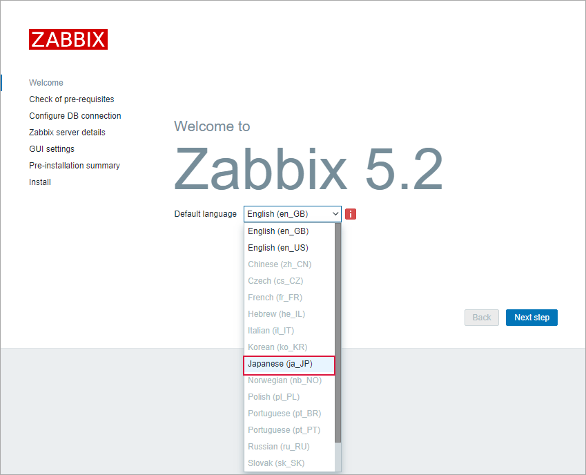Japanese(ja_JP)を選択次のステップ をクリック
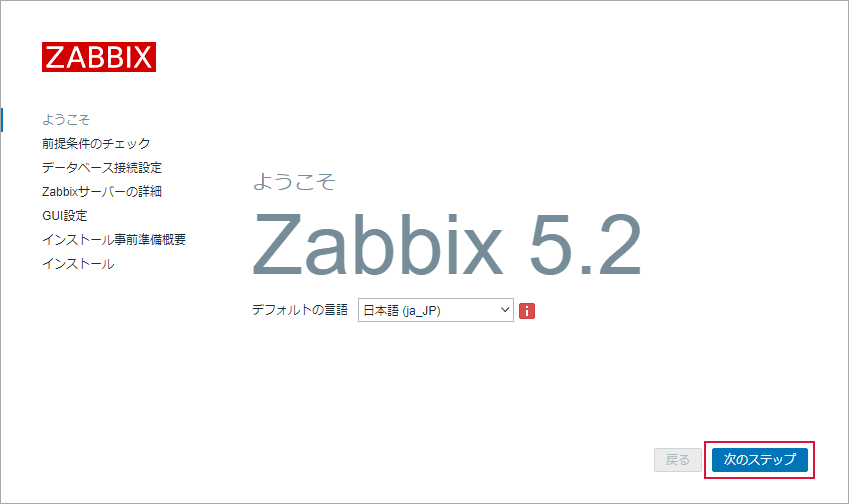「前提条件のチェック」で右端のチェック結果のすべてが “OK” であることを確認
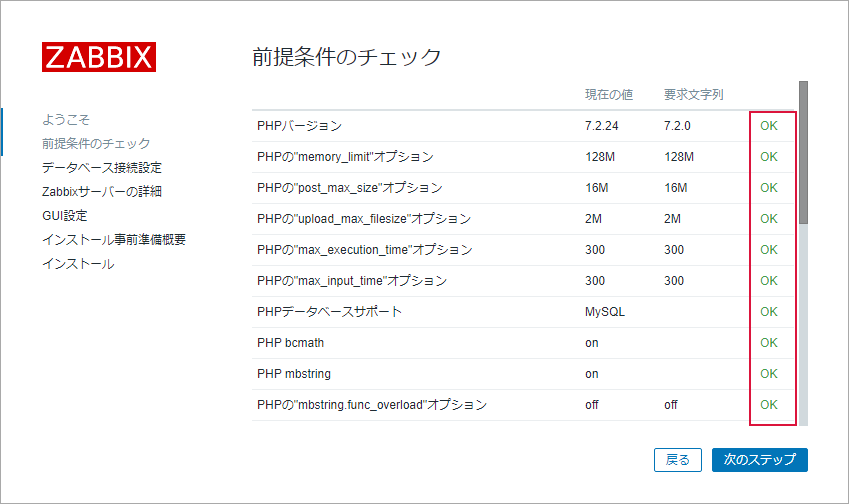次のステップ をクリック
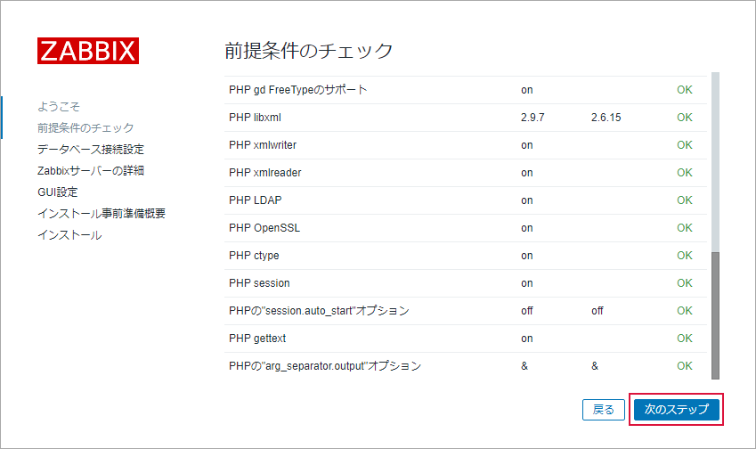初期値が表示されているので 「データベース名」、「ユーザー」、「パスワード」に
group_vars/zabbix_group.ymlファイルに定義した値に変更項目
group_vars/zabbix_group.yml
値
データベース名
zabbix_db_name
zabbix_db
ユーザー
zabbix_user
zabbixuser
パスワード
zabbix_pass
↓
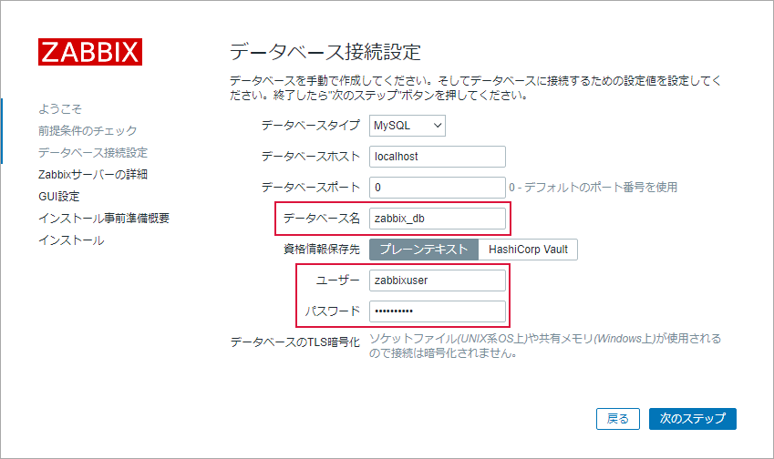次のステップ をクリック
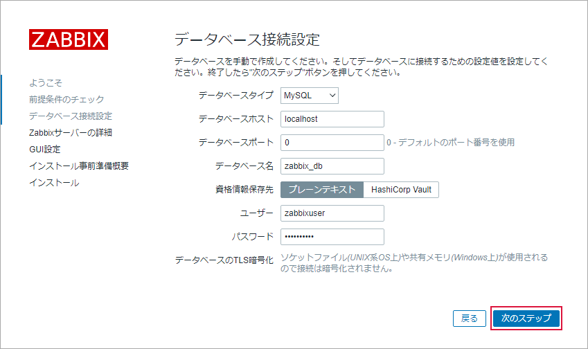「 Name 」に “Zabbix01” と入力（入力した文字列がダッシュボード画面の左上の Zabbix のロゴの下に表示される）
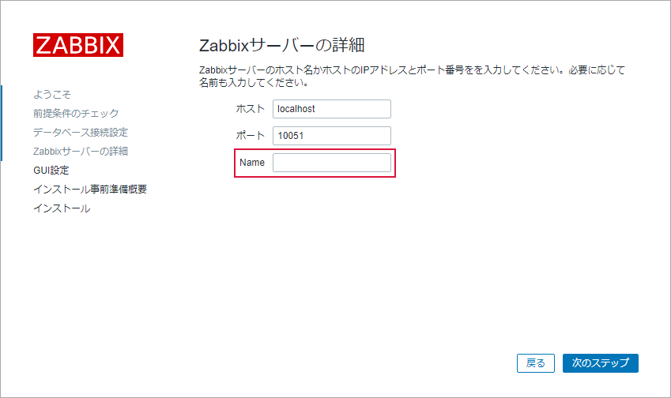↓
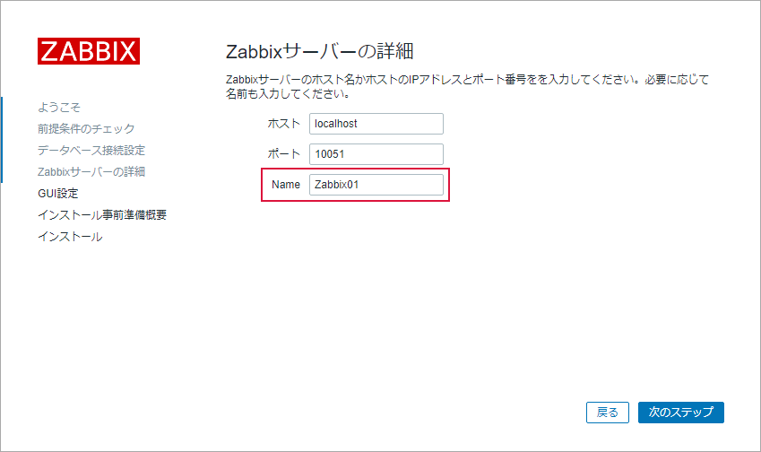次のステップ をクリック
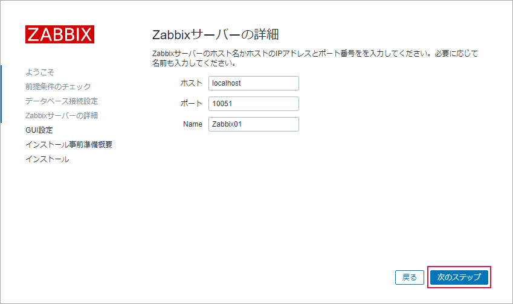次のステップ をクリック
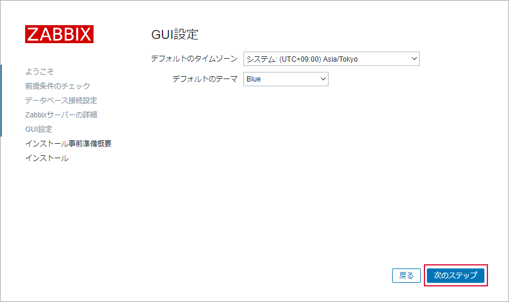次のステップ をクリック
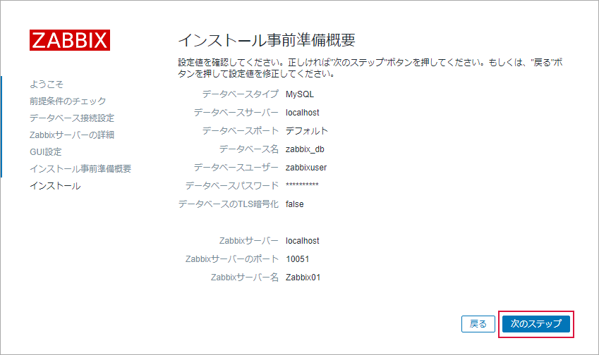終了 をクリック
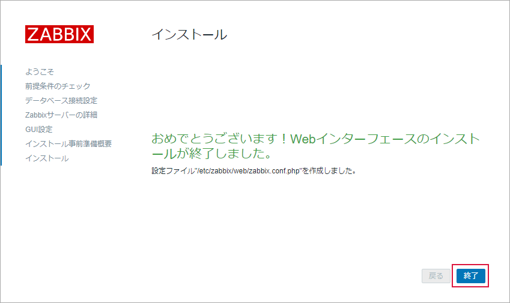Web インターフェースのインストール終了
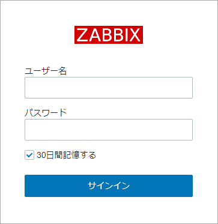
{kind=link}